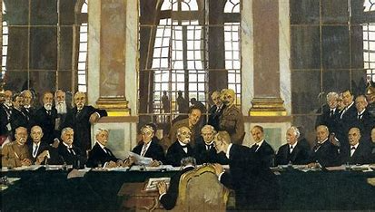
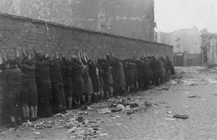

To understand the cause of WW2 you have to go to the end of WW1, to treaty of versailles
The treaty of versailles ended WW1 and held germany respinsibale for the war. the Allies gave impossaible demands to germany such as:
Because of this Germany was in debt because of them oweing such money and the time was not good
Soon hitler arrived
Hitler rose in power to create the Nazi party
The Nazi party created by hitler was the extremist German nationalist ("Völkisch nationalist"), racist and populist Freikorps paramilitary culture, which fought against communist uprisings in post-World War I Germany. The party was created to draw workers away from communism and into völkisch nationalism. Initially, Nazi political strategy focused on anti-big business, anti-bourgeois, and anti-capitalist rhetoric; it was later downplayed to gain the support of business leaders. By the 1930s, the party's main focus shifted to antisemitic and anti-Marxist themes. The party had little popular support until the Great Depression, when worsening living standards and widespread unemployment drove Germans into political extremism.
Once hitler became dictator One of the first actions he took against the Jews was to initiate a boycott of Jewish-owned businesses on April 1, 1932. This was followed by a series of discriminatory laws aimed at excluding Jews from various aspects of public life, such as banning them from civil service jobs, universities, and other professions3. These actions marked the beginning of a systematic campaign of persecution that would escalate over the years.
World War II[b] or the Second World War (1 September 1939 – 2 September 1945) was a global conflict between two alliances: the Allies and the Axis powers. Nearly all of the world's countries—including all the great powers—participated, with many investing all available economic, industrial, and scientific capabilities in pursuit of total war, blurring the distinction between military and civilian resources. Tanks and aircraft played major roles, with the latter enabling the strategic bombing of population centres and delivery of the only two nuclear weapons ever used in war. World War II was the deadliest conflict in history, resulting in 70 to 85 million fatalities, more than half of which were civilians. Millions died in genocides, including the Holocaust of European Jews, and by massacres, starvation, and disease. Following the Allied powers' victory, Germany, Austria, Japan, and Korea were occupied, and war crimes tribunals were conducted against German and Japanese leaders.